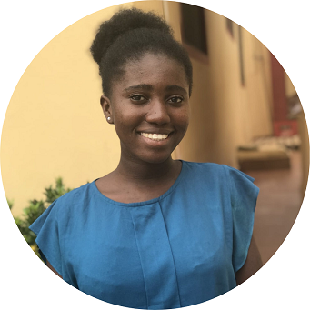

|  | Jessica Tweneboah3115 Balch Hall, Ithaca NY 14853 (607) 2800-459 jnt42@cornell.edu |
| 2023 (Anticipated) | Bachelor of Science, Electrical and Computer Engineering, Cornell University |
| OCTOBER 2019 – DEC 2019 | STUDENT LABORATORY ASSISTANT, DEPARTMENT OF CHEMISTRY AND CHEMICAL BIOLOGY, CORNELL UNIVERSITY
|
| OCTOBER 2019 – APRIL 2020 | STUDENT COMMUNITY SERVICE ASSISTANT, APPEL SERVICE CENTER, CORNELL UNIVERSITY
|
| JANUARY 2020 – MARCH 2020 | STUDENT LABORATORY ASSISTANT, DEPARTMENT OF PLANT SCIENCES, CORNELL UNIVERSITY
|